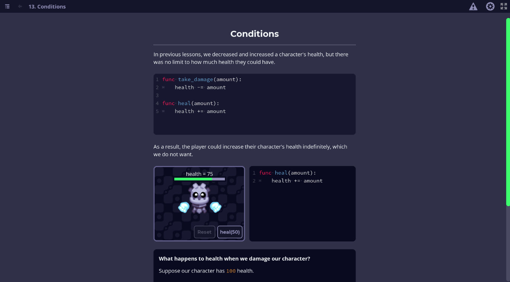

Learn to code with GDScript
In Godot, you can write code using the GDScript and C# programming languages.
If you are new to programming, we recommend starting with GDScript because we designed it to be simpler than all-purpose languages like C#. It will be both faster and easier to learn.
While GDScript is a language specific to Godot, the techniques you will learn with it will apply to other programming languages.
Note that it is completely normal for a programmer to learn and use multiple languages. Programming languages have more similarities than differences, so once you know one, you can learn another much faster.
Learn in your browser with the GDScript app
To learn GDScript, you can use the app Learn GDScript From Zero. It is a complete beginner course with interactive practices you can do right in your browser.

Click here to access the app: Learn GDScript From Zero app
This app is an open-source project. To report bugs or contribute, head to the app's source code repository: GitHub repository.
In the next part, you will get an overview of the engine's essential concepts.